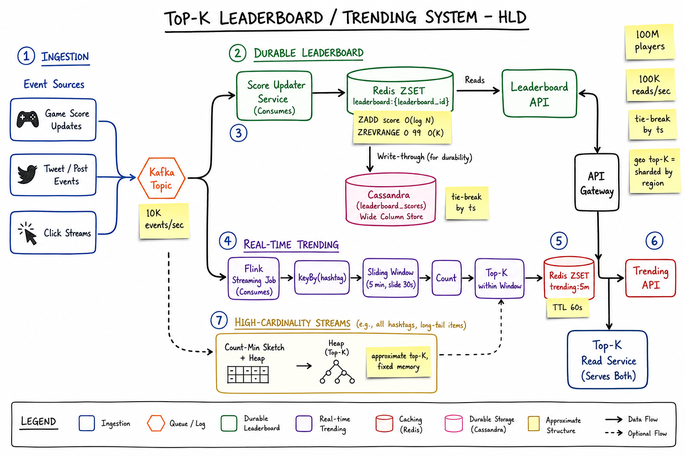
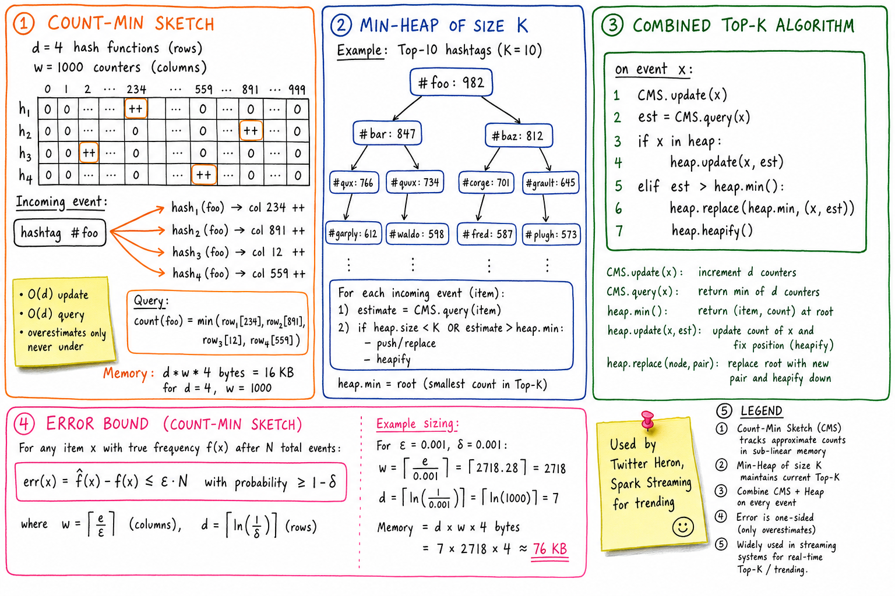
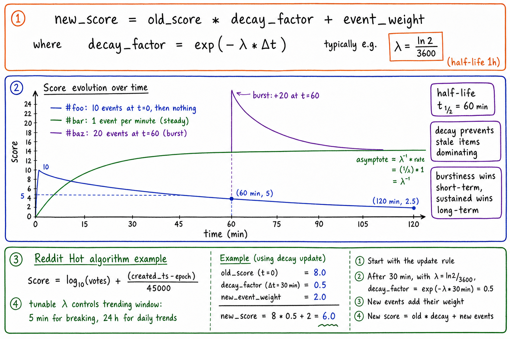

Top-K / Leaderboard / Trending // HLD
Two distinct flavors of the same problem: durable leaderboards (game scores, all-time top-K) and time-windowed trending (top hashtags last 5 min). 100M players, 10K score updates/sec, 100K reads/sec. Redis Sorted Set for durable, Flink streaming for trending, Count-Min Sketch + heap for approximate top-K on high-cardinality streams, exponential decay for "what's hot right now".

Whiteboard HLD. Ingestion: game-score updates / tweet events / clicks flow into Kafka. Two parallel consumers. Durable leaderboard: Score Updater Service writes to Redis ZSET keyed by leaderboard_id (ZADD O(log N), ZREVRANGE O(K)); write-through to Cassandra for durability. Real-time trending: Flink streaming job keyBy(hashtag), sliding 5-min window, count, emits top-K to Redis ZSET trending:5m (TTL 60s). High-cardinality streams use Count-Min Sketch + heap for approximate top-K in fixed memory. API Gateway routes both read paths.
01 — Requirements
Functional
- Maintain leaderboards: top 100 players by score (e.g. game high-scores)
- Trending right now: top 10 hashtags in the last 5 minutes
- Top-K queries at various time windows: 5m, 1h, 24h, all-time
- Player's own rank ("you are #1,234,567 of 100M")
- Per-region / per-game leaderboards
- Score updates: increment or set absolute value
Non-Functional
- Hot read path: 100K top-K reads/sec; p99 < 50ms
- Write throughput: 10K score updates/sec for games; 100K-1M tweet events/sec for trending
- Eventual consistency OK for trending; trending updates every ~30s
- Strong consistency preferable for durable leaderboards (you'd notice if your score disappeared)
- Bounded memory for trending over high-cardinality streams (billions of distinct items)
01a — Core Entities
| Entity | Key Fields | Notes |
|---|---|---|
| Leaderboard | leaderboard_id, type (DURABLE/WINDOWED), game_id?, region?, period? | Defines the scope (game, region, time). |
| Score Entry | (leaderboard_id, member_id) → score, updated_at | Durable: Redis ZSET + Cassandra write-through. |
| Event | event_id (Snowflake), key (hashtag/player), weight, ts, geo? | The atomic input to streaming top-K. Lives in Kafka. |
| Trending Bucket | (window_id, key) → count | Per-window counter in Flink state; emitted to Redis on window close. |
| CMS State | d×w int matrix per shard | Approximate counter when key cardinality is huge. |
| Top-K Heap | min-heap of size K, paired with CMS | Approximate top-K tracker; bounded memory. |
| Player Rank | (player_id, leaderboard_id) → rank (computed) | Exact: ZRANK; cached for tail to avoid O(log N) per query on viral charts. |
01b — API Design
Score writes
POST /leaderboards/{id}/scores
Idempotency-Key: ...
body: { member_id, score (set), delta?, source }
-> 200 { new_score, new_rank }
# Internal (event-driven, preferred at scale):
Kafka topic scores.updates { leaderboard_id, member_id, score|delta, ts }
Top-K reads
GET /leaderboards/{id}/top?k=100
-> { entries: [{member_id, score, rank}], updated_at }
GET /leaderboards/{id}/members/{member_id}/rank
-> { rank, percentile, score }
GET /trending?region=US&window=5m&k=10
-> { topics: [{key, count, change_pct}] }
Admin / config
POST /leaderboards { type, game_id, region, period }
POST /leaderboards/{id}/reset { effective_from } # weekly reset, etc.
Pagination beyond Top-K is the gotcha. Top-100 is O(K), trivial. "Show me 100 players around my rank" requires ZRANGEBYSCORE + offset arithmetic and can be O(log N + K). Beyond that, use precomputed percentile buckets or accept approximate ranks for the tail.
02 — Estimation
Players: 100M registered Score updates/sec: 10K avg, 50K peak (e.g. tournament moments) Top-K reads/sec: 100K avg, 500K peak (leaderboard tabs are hot) Durable leaderboard storage: 100M members * (8B id + 8B score) = 1.6 GB per leaderboard + Redis ZSET overhead ~3x => ~5 GB per leaderboard Shard by leaderboard_id; typically each lb fits 1 Redis node Trending: high-cardinality stream Twitter hashtag stream: ~5K hashtags/sec, ~100M distinct/day Maintaining exact counts: prohibitive CMS at eps=0.001, delta=0.001 -> ~76 KB total (see CMS section) Windowed trending: Flink: 5 min sliding window, slide 30s Per-region * per-platform * per-period -> ~100 window keys All fit comfortably in Flink keyed state
03 — Why It's Hard
- Two regimes: durable (long-lived, exact) vs windowed (ephemeral, approximate, time-bounded) — different stores, different algorithms.
- High write throughput on a hot key: the leaderboard ZSET is a single Redis key — one shard owns it.
- Tail rank queries: finding rank for the millionth player is O(log N) but with massive N is still slow at scale; tails matter for "where do I rank globally".
- Cardinality: trending over billions of distinct items can't keep exact counts — need approximations.
- Recency: 5-minute-old activity shouldn't dominate "trending now" forever — need decay or windows.
- Ties: two players with score 1000 — deterministic ordering needed (typically by ts ascending).
- Reset semantics: weekly resets, season transitions — need versioned leaderboards without losing history.
04 — Architecture
Event sources Read clients
(games, tweets, clicks) (apps, dashboards)
| |
v v
+-----------------+ +---------------+
| Kafka | | API Gateway |
| scores.updates | +---------------+
| tweet.events | |
+-----------------+ v
| +---------------------------+
+----+-----+ | Top-K Read Service |
| | +---------------------------+
v v ^ ^
+---------+ +-------------+ | |
| Score | | Flink | | |
| Updater | | Trending Job| | |
+---------+ +-------------+ | |
| | | |
v v | |
+-----------+ +-----------+ +---+---+ +---------------+
| Redis ZSET| | Redis ZSET| | Redis | | Cassandra |
| leader:{} | | trending: | | trend.| | leaderboard_ |
| (durable, | | {window} | | per- | | scores |
| sharded) | | (TTL 60s) | | region| | (durable copy)|
+-----------+ +-----------+ +-------+ +---------------+
|
v
+-----------+
| Cassandra | (write-through for durability)
+-----------+
High-cardinality side track:
+-----------------+
| CMS + min-heap | (approximate top-K within Flink job)
+-----------------+
05 — Two Flavors of Top-K
| Flavor | Example | Data structure | Algorithm |
|---|---|---|---|
| Durable | Game high-scores; reputation | Redis ZSET + Cassandra | ZADD on update, ZREVRANGE on read |
| Windowed | Trending hashtags 5m, 1h | Flink keyed state + sliding window | keyBy + window + count + emit top-K |
| Decaying | "Hot now" mix of recency & volume | Redis ZSET with decayed scores | periodic re-score + new event += weight |
| Approximate | Trending across high-cardinality items | CMS + min-heap | CMS for counts, heap for top-K |
An interview answer should explicitly distinguish these — choosing the wrong one for the problem is the most common miss.
06 — Redis Sorted Set (Durable Leaderboard)
key: leaderboard:{leaderboard_id}
type: ZSET
member: player_id
score: current score (float)
Ops:
ZADD leaderboard:{id} {score} {player_id} # O(log N)
ZINCRBY leaderboard:{id} {delta} {player_id} # O(log N) for deltas
ZREVRANGE leaderboard:{id} 0 99 WITHSCORES # top 100, O(K + log N)
ZREVRANK leaderboard:{id} {player_id} # player's rank, O(log N)
ZSCORE leaderboard:{id} {player_id} # current score, O(1)
Why ZSET is perfect
- Skip-list backed: O(log N) insert/update, O(K) range read.
- Supports both score-based and rank-based queries.
- Atomic single-command ops — no need for transactions.
- Memory-compact compared to maintaining a heap + map ourselves.
Durability via write-through
- Score Updater writes to Redis first (hot path), then async to Cassandra.
- On Redis node loss: rebuild ZSET by scanning Cassandra partition for that leaderboard_id (slow but reliable).
- Or: enable Redis AOF + replicas, then Cassandra is for compliance/archival rather than recovery.
See Redis for ZSET internals (skip-list + hash table).
07 — Time-Windowed Trending (Flink)
For "trending now over the last 5 minutes", the answer is streaming windows.
// Flink pseudocode
events
.keyBy(e -> e.hashtag)
.window(SlidingEventTimeWindows.of(Time.minutes(5), Time.seconds(30)))
.aggregate(new CountAggregator()) // partial sum per key
.keyBy(c -> c.window_id)
.process(new TopKAcrossKeys(10)) // top 10 across all keys in window
.addSink(new RedisZsetSink("trending:5m"))
Window choices
- Tumbling: non-overlapping fixed windows. Simple but boundary artefacts (a trend straddling the boundary gets split).
- Sliding: overlapping windows, slide 30s. Smoother. More state.
- Session: gap-based; not typical for trending.
Watermarks & late events
- Event-time windows + watermarks handle out-of-order events.
- Allow late firings up to N seconds for stragglers.
- Emit to Redis on each window completion; clients read latest emitted snapshot.
See Flink deep dive, Kafka.
08 — Count-Min Sketch + Min-Heap (Approximate Top-K)

Count-Min Sketch is a 2D array (d hash functions, w counters wide). For each event, increment one counter per row; query takes the minimum across rows (overestimates only, never under). Pair with a min-heap of size K: for each event, query CMS for the new count; if larger than the heap's min, push/replace. Combined: O(d) per event update + O(log K) heap maintenance, all in fixed memory regardless of cardinality.
The combined algorithm
on event x:
CMS.update(x) # increment d counters
est = CMS.query(x) # min across d counters
if x in heap:
heap.update(x, est)
elif est > heap.min():
heap.replace(heap.min, (x, est))
Sizing
Error bound: err(x) ≤ eps * N w/ prob ≥ 1-delta
Sizing: w = ceil(e/eps)
d = ceil(ln(1/delta))
Example: eps = 0.001, delta = 0.001
w = 2718, d = 7
memory = d * w * 4 bytes = 76 KB
Compare to exact: 100M distinct keys * (32B + 4B) = 3.6 GB (and growing)
Same memory budget no matter how cardinality grows.
When to reach for it
- Distinct-key cardinality is huge or unbounded (e.g. all hashtags ever).
- Approximation acceptable (interviewer says "approximate top-K is fine").
- Memory bounded and known up-front.
Alternative: Misra-Gries (Heavy Hitters)
- O(K) memory; guaranteed to identify all items with frequency > N/K.
- Simpler than CMS for pure top-K (no counts, just identity).
- Used in early versions of "stream top-K" papers.
09 — Exponentially Decaying Score

new_score = old_score × decay_factor + event_weight where decay_factor = exp(-lambda × delta_t). Older events fade exponentially; sustained activity asymptotes; bursts spike and decay. Tunable lambda controls the trending window (5 min for breaking news, 24 h for daily). Used by Reddit Hot, Hacker News, Twitter trending.
Why decay over hard window?
- Hard windows have boundary effects: a hashtag's score drops to zero at minute 5:01.
- Decay smoothly de-weights older events; better UX.
- Storage: single score per key (a ZSET) instead of per-window state.
Implementation
periodically (or on every event):
new_score = old_score * exp(-lambda * (now - last_ts))
+ (current event weight if applicable)
Concrete:
old=8.0, decay_factor=0.5 (30 min later), new_event_weight=2.0
new = 8 * 0.5 + 2 = 6.0
Reddit Hot algorithm (a classic example)
score = log10(max(votes, 1)) + (created_ts - epoch) / 45000 The newer a post, the higher (created_ts - epoch); log10 limits dominance by megaposts. 45000 = ~12.5 hours = the "half-life" of a post's rank.
Trade-off: decaying is less precise than windows but cheaper and looks smoother to users. Pick one and be explicit about it.
10 — Player Rank (Tail Problem)
Top-K is easy. Knowing "you're rank #1,234,567 of 100M" for the tail is harder.
- Exact via ZRANK: O(log N) on the skip-list. Fine for occasional queries; expensive at viral chart load.
- Approximate via percentile buckets: precompute the score threshold at the 10th, 25th, 50th, 75th, 90th, 99th percentiles every minute; map player's score to nearest bucket.
- Approximate via t-digest / HDR histogram: data structure designed for streaming quantiles; better than fixed buckets.
- Caching: player's rank cached with short TTL (e.g. 30s); recomputed on next miss.
- Tie-breaking: compose ZSET score as
main_score * 10^9 + (max_ts - update_ts)so newer ties rank lower.
11 — Geographic / Multi-Dimensional Top-K
- Per-region leaderboards: separate ZSET per (game_id, region, period). Naturally sharded.
- Cross-region "world" leaderboard: lazily aggregated (e.g. nightly Spark job that merges regional ZSETs into a global ZSET).
- Multi-dimensional: keyed leaderboards (e.g.
(game_id, weapon_type, region)) — one ZSET per combination, generated only when traffic exists. - Trending per region: Flink keyBy(region, hashtag); per-region Redis ZSET.
12 — Scaling
- Shard by leaderboard_id — each ZSET on its own Redis shard. ~1GB-5GB per leaderboard fits.
- Hot leaderboard (viral game): shard the ZSET itself (random suffix → ZSET_a, ZSET_b, ZSET_c); union at read for top-K.
- Read replicas: top-K reads are dominant — replicate hot ZSETs across multiple Redis read replicas.
- Flink job autoscales by partition count; checkpoints to S3.
- Cassandra as durable backing for replay; sharded by leaderboard_id.
- API tier: stateless Top-K Read Service behind LB; in-process caching of the top-K result (TTL 1-5s, fine for trending).
- Pre-aggregated dashboards: write-time emit to materialized Redis sets for the popular query shapes.
13 — Edge Cases
- Tie scores: deterministic ordering by encoding (score × large + tiebreaker) — otherwise pagination breaks across reads.
- Leaderboard reset (weekly/season): versioned key (
leaderboard:{id}:v{season}); old key archived to Cassandra + retired. - Negative scores: allowed (ZSET supports), but check before clearing on the API surface.
- Score regression (anti-cheat): only accept score ≥ previous via ZADD GT modifier.
- Late events in trending: Flink allowed_lateness handles up to N seconds; very late events dropped.
- Hot key on viral trend: the trending Redis ZSET is read by everyone — replicate to multiple read replicas.
- Cardinality explosion in trending (e.g. spammers minting new hashtags): CMS naturally bounds memory; min-floor counter to avoid surfacing trends with N<100.
- Redis ZSET loss: rebuild from Cassandra; tolerated since durable copy exists.
- Cross-region inconsistency: trending is per-region; global trending lags by the slowest aggregator.
14 — Real-World Equivalents
| System | Notes |
|---|---|
| Twitter Trending | Heron (Twitter's streaming) + sliding windows + CMS; per-region trends |
| Reddit Hot | The classic decaying-score algorithm (log10(votes) + ts/45000) |
| Hacker News | score = (p - 1) / (t + 2)^G with G=1.8; pageviews + gravity |
| Twitch chat trending emotes | Streaming windows + CMS on emote stream |
| Gaming leaderboards (Steam, Xbox Live) | Redis ZSETs sharded per (game, region); rank queries are first-class product |
| Spotify "Top Songs" | Per-region streaming play counts; daily/weekly aggregated via Flink/Spark |
| Amazon "Best Sellers" | Hourly batch rollup over order events; decayed |
15 — Interview Q&A
How do you maintain a top-100 leaderboard with 100M players?
Why ZSET specifically and not just a sorted list?
How do you compute trending hashtags over the last 5 minutes?
trending:5m with TTL 60s. The Trending API reads this ZSET. Watermarks handle late events; allowed-lateness covers stragglers.Why not just keep exact counts for every hashtag?
Walk me through Count-Min Sketch.
(i, h_i(x)) for each i in [d]. To query count(x): return min over rows of counters at (i, h_i(x)). The minimum is the tightest upper bound (collisions inflate counts but never deflate them). Sizing: w = ceil(e/eps), d = ceil(ln(1/delta)) gives error ≤ eps * N with prob ≥ 1-delta.How would you bias for recency in trending without fixed windows?
new_score = old_score × exp(-lambda × delta_t) + new_event_weight. Older contributions fade smoothly; sustained activity asymptotes; bursts decay over time. Tunable lambda controls effective window: ln(2)/lambda = half-life. Reddit Hot uses this (with log10 votes); Hacker News uses a similar gravity-decayed score. Cheaper than maintaining per-window state.How does a player check their own rank when there are 100M of them?
ZRANK is O(log N) on Redis. For the tail, that's still ~26 lookups deep into the skip-list per query — fine for occasional queries but expensive at scale. Mitigation: precompute percentile buckets every minute (10th, 25th, 50th, 75th, 90th, 99th score thresholds) and map the player's score to a bucket. Or maintain a t-digest for streaming quantiles. Cache per-player rank with short TTL.How do you handle ties in scores?
score_field = main_score * 10^9 + (MAX_TS - update_ts). Newer updates rank lower among ties (or higher, depending on policy). This keeps ordering deterministic across reads so pagination doesn't shuffle. Alternative: maintain a secondary sort key, but composing into the float score is simpler and uses ZSET's natural ordering.What if the trending ZSET becomes a hot key?
trending:5m simultaneously. Mitigations: replicate the ZSET to multiple Redis read replicas; serve reads from a random replica via consistent hashing on viewer; add a local in-process cache in the API tier with 1-5s TTL (trending is eventually consistent anyway); use Memcached as a fast write-through cache in front of Redis.How would you reset a leaderboard weekly?
leaderboard:{id}:v{season}. Reset = bump the version pointer in a small config row. Old key archived to Cassandra (snapshot of final state, plus history of weekly leaders), then evicted from Redis. No data loss, no migration window. Players see new empty leaderboard immediately.